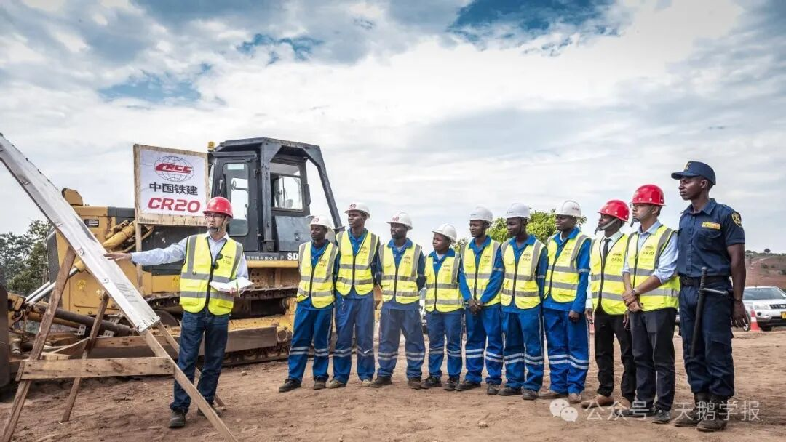

萨缪尔森在其经典教科书《经济学》第42章中写道：
“由于李嘉图对某问题的论述缺乏逻辑而且含糊不清，所以对他的评价也许过高了。和斯密和凯恩斯相比是如此。和他同时代的马尔萨斯，约翰穆勒以及在他之后的……相比也是如此。”
“他维护一种过分简单和空洞的萨伊定律……在他的论述中，似乎在长时期中是正确的结论，在短时期中也是正确的。他对劳动价值论，犹豫不定，忽冷忽热……许多人会同意杰文斯和凯恩斯的看法，认为大卫李嘉图把经济学引入歧途。”
如果用现实去刻板地拟合理论，上述尖锐的批评不无道理。有人指出，李嘉图忽略了动态和历史（“dynamic and history”）。例如，李嘉图在说明比较优势时，唯一的生产要素——劳动是不允许跨国流动的。而拓展到两要素模型，只要劳动力和资本或土地的比率发生改变，就有可能带来要素收入的增加，这也可以解释现实中广泛存在的要素（主要指劳动力）跨国流动。在某种意义上，跨境流动改变了比较优势，而不是简单地让各国更好地利用先前存在的比较优势。李嘉图的比较优势真的错了吗？
李嘉图的比较优势与当代分工
作为李嘉图模型的核心概念，“单位产品劳动投入”可以与“技术”的划上约等号，技术差异也是国家间贸易的动力。然而在当下，国际贸易是一个重要的国际技术转让渠道（ITT），通过产品贸易，人员流动，外国直接投资（FDI）和技术市场贸易（Hoekman et al. 2005），一国的代理人得以接触外国知识，并成功学习、将其吸收进入生产过程（Maskus, 2004）。这是否说明李嘉图模型在长期发展中“自噬”了呢？恐怕并不尽然。
模型的本质就是复杂问题简单化。在这里，需要关注的有三点。第一，李嘉图模型的专业分工是依据比较优势而非绝对优势，即使通过技术转让渠道改变了现有技术，只要一个国家内的不同产品生产投入不完全相同，只要国家间的不同产品投入比例不完全相同，就仍有比较优势存在的空间。第二，在李嘉图的模型中，跨境流动的只有商品，“技术”并不是模型中流动的主体。第三，一方面自由贸易在完全竞争的市场下进行，不存在规模经济。李嘉图模型作为静态模型，考虑的是一个个时点上的切片，而不是具有增长性的演进线条，因此，也可以认为具体描述的某一个场景下，短期甚至“瞬时”或“切片”的技术是既定的。现实中的技术转让、技术快速迭代尽管可以认为是颠覆了李嘉图模型最根本的前提假设，但仍然可以看出分工格局改变的一种倾向。如亚洲四小龙的轻工业、中国大陆改革开放初期“三来一补”等例子中，发展中国家利用发达国家转移劳动密集型产业的机会，吸引外国大量的资金和技术，凭借本地廉价而良好的劳动力优势，实现了经济的快速增长。在这其中，经济结构的重大变化（农业的比重下降、工业的比重上升）与出口迅速扩张、人均收入水平迅速提高是同时存在的。这可以说明，李嘉图模型在解释晚近现象上仍不失其强大的生命力。
流水线上的女工趁工作间隙揉眼休息 (1990年深圳)
当然，李嘉图的比较优势中，差异是贸易的前提。那么，当亚洲四小龙与欧美等老牌发达资本主义国家的三产比例都已相近，是否仍有进行贸易的必要？需要分清的是，三产比例的变化可能是经济增长及现代化的必然趋势（这里不做过多讨论），工业相对于农业，可能是全球范围的普遍上升，或者与现代技术发展进步互为表里。不过，行业内的贸易等现象已经超出了李嘉图时代所能预见的范围。
贫民的优势
一般认为，李嘉图是劳动价值论的代表，也被称为93%的劳动价值论。在比较优势模型中，由于完全竞争市场下零利润条件的成立，使得所有的所得归劳动者所有。商品的价格也仅仅由劳动所决定，劳动在一国之内的不同部门之间可以自由流动，因此不会有“受损”的可能。这也是李嘉图模型驳斥“贫民劳动论”的观点。但需要注意的是，这里面并没有“资本”与“利润”的存在，我们不能讨论不存在的东西是否正确。当下流行的一种疑问是，“为何承接了产业转移的发展中国家无法复制发达国家的发展道路？”一种解释指向了李嘉图模型中掩盖了的劳资矛盾。在金融资本主义阶段，剥夺的对抗性矛盾被转移了，并且显得更隐蔽，而且剥夺量可能进一步扩大。因为迁出产业往往是占有那些资源价格低、甚至不计环境成本的发展中国家，本质上是把这些发展中国家应付未付的劳动力剩余都转成了发达国家的收入资本主义全球化生产资料。
尽管，对于贫民劳动论，可以用“不这样的话会更差”来驳斥，但关键是问题在于，发展中国家真的需要走和发达国家一样的道路吗？

受雇于中国铁建的非洲当地工人
“发展中”和“发达”两个词汇的倾向过于明显，使得这一设问本身就像“先射箭再画靶”。但可以确认的是，李嘉图不认为所有国家都必须从事一样的生产，差异化是理论的前提。他的观点是“各司其职”，可能在经典例子中具有绝对优势的本国的确更加“发达”，但葡萄酒和棉布之间并没有突出“高端”“低端”之分。比较优势对于绝对优势的超越，就在于不需要每个国家都在同样的赛道竞争，而是能够通过合作，利用所长。然而，这是否能够达成一种真正的“美美与共”？李嘉图模型中并没有考虑国际间的工资差异，或者在李嘉图假定的劳动唯一要素投入之下，我们甚至可以直接说国民收入之间的差异。
从“间接”生产的角度看，一国可以凭借贸易“扩展”生产可能性边界，但问题是，国际间的劳动不能自由流动的情况下，发展中国家不可能光凭借比较优势而实现和发达国家一样的生活水平，这样的结果是公平的吗？那么，穷国还要不要参与国际分工呢？
不妨做一个乐观者
这一诘问已经超过了李嘉图模型应该回答的范畴，或者说超过了国际贸易应该回答的范畴。“不这样的话会更差”，当然不意味着“本就该这样”。李嘉图无疑是自由贸易的坚定支持者，在他的假想中，国家最终会走向一种乐观的、完美的分工状态。回到萨缪尔森的那句评价，“在他的论述中，似乎在长时期中是正确的结论，在短时期中也是正确的。”通常认为古典经济学研究长期，但在见证各种沧桑巨变的长期的历史却被假定成了有诸多“固定”的长期。
真正的历史，究竟是少数演进而多数波动因而长期稳定，还是在诸多的曲折蜿蜒中，预示着会终将走向一个理想的稳态？
人们只能在“直接碰到的、既定的、从过去继承下来的条件下”创造自己的历史。由此，我更愿意称李嘉图的比较优势是一种包含“地球村式”愿景地精神，是一种思考问题的很好的“哲学”。他看到了机会成本与合作带来的可能。Good sense economics is not all obvious.( Samuelson and Nordhaus , 1998) 李嘉图模型用需要“转一个弯子”但仍较为浅显的论证，给两百年后已不可能倒退回闭关锁国状态的世界一个乐观科学的理念，一个凝聚共识的可能。
李嘉图模型并不是完美的，但至少在前提假设下已经很好地完成了使命，因为它坚定地回答了：现实地看，国际贸易不是一件坏事情。那些喊着反对“跨国剥削”而反对穷国参与国际市场的论调，反而令人不得不警惕——毕竟“大奸似忠”早已不是一个新招数。要真正迈向“美美与共”，不妨少谈点主义，多谈点生意。